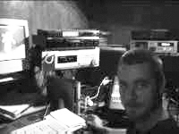
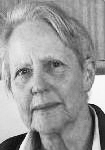

Charlotte Bunt began performing professionally in her early teens in America. Later on, as a student of drama and graduate of the Ensemble Studios, she continued working as an actor in lead roles for the New theatre and Yept productions in Sydney as well as Canberra theatres. She studied piano from an early age and has written many short stories and poems. Charlotte writes the scripts for Toybox, lyrics and melodies for their music,helps construct puppets,directs and performs. In her spare time, she enjoys working with animation, digital video and graphic design.
Sean Meany has extensively studied keyboard and classical guitar. He has been writing and composing music for many years and is experienced in modern music technology. Sean's high standard of digital recording, arrangement and production is attributed to the success of Toybox. Also, Sean constructs puppets, hand carving and stringing them and is responsible for creating sets, lighting , sound and stage mechanics. He is the co-creator and puppeteer for Toybox.
Joan Holt(married name Vance 1926-2005) learnt to draw at the Dattilo-Rubbo school of Art. Her love for colour was nurtured at the age of fifteen with tuition from Grace Cossington Smith. She was highly influenced by the compositions of Cezanne at an early age. As a young adult she studied art in London, returning to teach in NSW schools for four years. Joan always enjoyed doing portraits and landscapes as well as for many years running a property with goats and other animals.Toybox was very fortunate to have her paint their backdrops and audiences were always delighted by them.